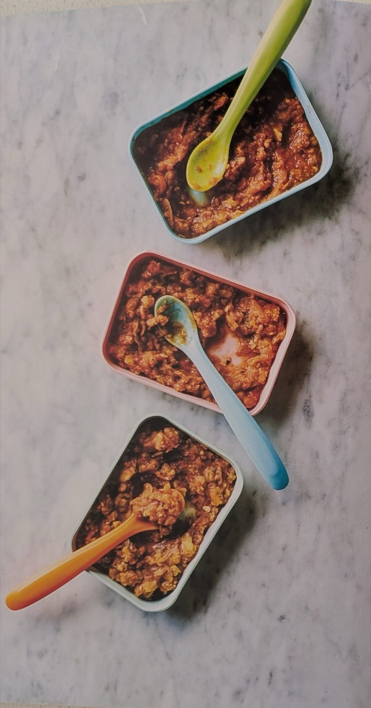

Mini Moroccan Tagine
A gently spiced one-pan tagine of grated vegetables, chickpeas and dates, mashed or blended to suit how much chewing the baby is up to.

Ingredients
Method
- Heat a pan and add the 1 tbsp olive or coconut oil. Add the 1 red onion and 2 garlic cloves and sweat for a couple of minutes.
- Pile in the 2 carrots, 2 courgettes, 8 tbsp chickpeas, 1 butternut squash and 4 tomatoes.
- Follow with the 2 tsp ground cumin, 2 tsp ground cinnamon and 2 Medjool dates.
- Pour in the 360ml cold water, baby-friendly bone broth or salt-free bouillon/stock. Stir, put the lid on and simmer gently for 12-15 minutes, checking halfway through and adding a splash more water if it needs it.
- Remove from the heat and allow to cool.
- Tip into a bowl and mash or blend, depending on how many teeth the baby has.
- Serve with a blob of the 4 tsp plain yoghurt on top.
Notes
- Feeds 2 adults and 2 little ones.
- Make it a more substantial meal by serving it over wholemeal couscous, which cooks in seconds.
- Feel free to double (or more) the number of dates for extra chewy sweetness – especially since you probably have a whole box of them.
- Add diced lamb to up the protein and mineral content, though the chickpeas and butternut squash do a very good nutritional job by themselves.
Source: Beth Bentley, Young Gums, p.125